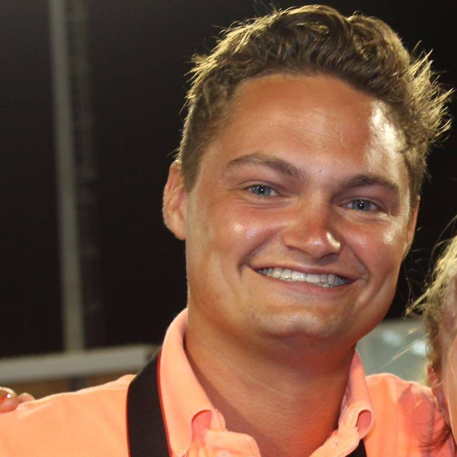

Elke sporter heeft onderweg naar de top een team nodig die achter hun staat en hun steunt op de belangrijke momenten. Team Talent Empowerment is dat team: met een groep ambitieuze, enthousiaste en talentvolle Team Members zorgen wij ervoor dat de sporter de support heeft om het maximale eruit te halen. En dit kan op tal van manieren: je kan bijvoorbeeld denk aan het organiseren van evenementen voor de sponsors van Talent Empowerment, het uitdenken en inrichten van strategische samenwerkingen met nieuwe partners of het neerzetten van een online platform voor de aangesloten bedrijven. Maar denk bijvoorbeeld ook aan het meedenken in en bijdragen aan de online branding en communicatie (social media, website) van een topsporter. Alles is mogelijk. En het mooiste: naast de ontwikkeling van de topsporter, staat ook jóuw ontwikkeling centraal.
Studentenprogramma
Een persoonlijke coach
Je krijgt met je team een persoonlijke coach, waar je ten allen tijden een beroep op kan doen. Je hebt per maand ook een coachgesprek, waar je als Team je activiteiten kan overleggen met een professional met jarenlange ervaring binnen zijn vakgebied.
Trainingsprogramma
Je volgt met je collega’s meerdere trainingen per jaar. In elk van deze trainingen zal een ander onderdeel van jouw persoonlijke ontwikkeling naar voren komen. Denk aan onderwerpen als talent branding, presentatievaardigheden, accountmanagement en onderhandelen. Deze trainingen worden ingevuld door de partners van Talent Empowerment.
Sports meets Business
Deze sessies, die gevolgd worden samen met de topsporters en de sponsoren, komen thema’s naar voren die zowel voor de topsporter, de sponsoren als jouw interessant en relevant zijn. Denk aan een workshop van Minke Booij (3-voudig Olympiër, Olympisch kampioen in 2008) over talentontwikkeling. In de Sport meets Business workshops wordt de parallel getrokken tussen topsport en bedrijfsleven.
Verantwoordelijkheid & uitdaging
Maar het belangrijkste: je krijgt met jouw team alle verantwoordelijkheid, en wordt continu uitgedaagd. Dit, met de hierboven staande training en coaching, zijn de ingrediënten voor een steile leercurve.
Het TalentEmpowerment Team

Bertram Veen
Geboortedatum: 13-02-1995
Functie: Co-fouder
Studie: Business Innovation
Heb jij een vraag voor Bertram, neem dan contact op met judith@talentempowerment.nl.
Laurens Matla
Geboortedatum: 01-11-1994
Functie: Co-founder
Studie: Management of technology
Heb jij een vraag voor Judith, neem dan contact op met judith@talentempowerment.nl.
Isabelle Haenen
Geboortedatum: 02-06-1994
Functie: Team manager
Studie: Informatiekunde
Heb jij een vraag voor Isabelle, neem dan contact op met isabelle@talentempowerment.nl.
Judith Visser
Geboortedatum: 26-01-1996
Functie: Redacteur
Studie: Journalistiek
Heb jij een vraag voor Judith, neem dan contact op met judith@talentempowerment.nl.
Matthijs Ottenhoff
Geboortedatum: 29-07-1994
Functie: Sales
Studie: Commerciele Economie
Heb jij een vraag voor Matthijs, neem dan contact op met matthijs@talentempowerment.nl.
Karel van Doesburg
Geboortedatum: 26-08-1993
Studie: Technische Informatica
Functie: Web Developer
Heb jij een vraag voor Karel? Neem dan contact op met karel@talentempowerment.nl.